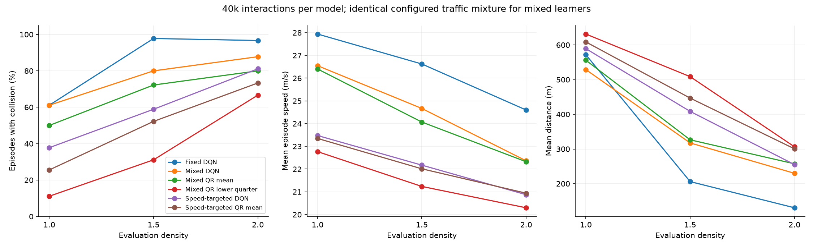
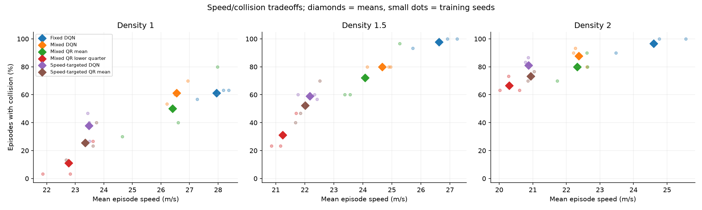

DEEP RL / STRONGER BASELINES
DQN and QR-DQN now both train for 40,000 interactions on the same configured episode-density mixture: 1, 1.5 and 2. Rewards, hidden-layer sizes, optimizer settings and exploration schedules are held fixed. Experience remains policy-dependent; there are three training seeds per learner.
Coverage comparison, return diagnostics and replays · Numerical results · Recorded design
At density 1, cautious QR minus speed-targeted DQN is -26.7 collision percentage points (exploratory interval [-44.4, -7.8]), with a speed difference of -0.71 m/s.
At density 2, cautious QR minus speed-targeted DQN is -14.4 collision percentage points (exploratory interval [-30.0, 1.1]), with a speed difference of -0.58 m/s.
The full seed results and residual speed differences below are needed to interpret these comparisons.

Mixed learners share the configured traffic distribution and step budget. The fixed-density DQN is retained to show its coverage effect. The cautious QR selector uses the lowest quarter of 32 outputs, without additional risk-level tuning.
For each learner, select a cap using only seed-0 normal-traffic speed closeness to the cautious QR policy; then freeze it before evaluating seeds 1 and 2. The development threshold grid is 21–25 m/s. This does not match the full speed distribution or the action interventions.
| Learner | Selected cap m/s | Target speed m/s | Seed-0 residual m/s |
|---|---|---|---|
| dqn | 25.0 | 23.619 | -0.180 |
| qrdqn | 25.0 | 23.619 | +0.126 |

Scenarios 10000–10029; densities 1, 1.5 and 2.
| Method | Density | Collisions | Speed m/s | Distance m | Mean return | Worst 10% return |
|---|---|---|---|---|---|---|
| Fixed DQN | 1.0 | 61.1% | 27.94 | 572 | 5.39 | -0.24 |
| Fixed DQN | 1.5 | 97.8% | 26.62 | 206 | 0.12 | -1.12 |
| Fixed DQN | 2.0 | 96.7% | 24.60 | 130 | -0.80 | -1.80 |
| Mixed DQN | 1.0 | 61.1% | 26.55 | 529 | 3.85 | -0.20 |
| Mixed DQN | 1.5 | 80.0% | 24.67 | 317 | 0.66 | -1.45 |
| Mixed DQN | 2.0 | 87.8% | 22.37 | 230 | -0.62 | -1.89 |
| Mixed QR mean | 1.0 | 50.0% | 26.41 | 556 | 4.19 | -0.15 |
| Mixed QR mean | 1.5 | 72.2% | 24.07 | 326 | 0.53 | -1.74 |
| Mixed QR mean | 2.0 | 80.0% | 22.32 | 257 | -0.38 | -1.86 |
| Mixed QR lower quarter | 1.0 | 11.1% | 22.77 | 631 | 2.60 | 0.13 |
| Mixed QR lower quarter | 1.5 | 31.1% | 21.24 | 509 | 0.37 | -1.86 |
| Mixed QR lower quarter | 2.0 | 66.7% | 20.30 | 306 | -0.88 | -1.97 |
| Speed-targeted DQN | 1.0 | 37.8% | 23.48 | 589 | 2.76 | -0.35 |
| Speed-targeted DQN | 1.5 | 58.9% | 22.17 | 408 | 0.59 | -1.66 |
| Speed-targeted DQN | 2.0 | 81.1% | 20.87 | 255 | -0.79 | -1.89 |
| Speed-targeted QR mean | 1.0 | 25.6% | 23.35 | 609 | 2.96 | -0.36 |
| Speed-targeted QR mean | 1.5 | 52.2% | 22.01 | 447 | 0.75 | -1.78 |
| Speed-targeted QR mean | 2.0 | 73.3% | 20.94 | 301 | -0.48 | -1.86 |
Separate development scenarios 16000–16029; density 1.25 is intermediate and density 2.5 is beyond both training ranges.
| Method | Density | Collisions | Speed m/s | Distance m | Mean return | Worst 10% return |
|---|---|---|---|---|---|---|
| Fixed DQN | 1.25 | 74.4% | 27.93 | 438 | 3.53 | -0.56 |
| Fixed DQN | 2.5 | 98.9% | 24.44 | 122 | -0.87 | -1.82 |
| Mixed DQN | 1.25 | 58.9% | 25.28 | 484 | 2.63 | -0.78 |
| Mixed DQN | 2.5 | 94.4% | 22.64 | 148 | -0.98 | -1.93 |
| Mixed QR mean | 1.25 | 55.6% | 25.29 | 506 | 2.83 | -0.59 |
| Mixed QR mean | 2.5 | 91.1% | 22.25 | 156 | -1.02 | -1.90 |
| Mixed QR lower quarter | 1.25 | 15.6% | 22.06 | 604 | 1.79 | -0.70 |
| Mixed QR lower quarter | 2.5 | 84.4% | 20.68 | 198 | -1.21 | -1.95 |
| Speed-targeted DQN | 1.25 | 18.9% | 23.02 | 639 | 3.01 | -0.45 |
| Speed-targeted DQN | 2.5 | 91.1% | 21.16 | 168 | -1.21 | -1.93 |
| Speed-targeted QR mean | 1.25 | 20.0% | 23.01 | 631 | 2.97 | -0.89 |
| Speed-targeted QR mean | 2.5 | 87.8% | 20.79 | 180 | -1.20 | -1.90 |
Negative collision differences favor cautious QR. Exploratory 95% intervals use 5,000 crossed bootstrap replicates over model seed IDs and shared scenarios, preserving policy pairing. Speed-control intervals condition on the selected cap and do not adjust for its selection. Three seeds and repeated development use limit inference.
| Block | Reference | Density | Collision change pp | Exploratory interval pp | Speed change m/s | Per-seed collision change pp |
|---|---|---|---|---|---|---|
| main | Mixed DQN | 1.0 | -50.0 | [-73.3, -23.3] | -3.78 | [-26.7, -66.7, -56.7] |
| main | Mixed DQN | 1.5 | -48.9 | [-70.0, -26.7] | -3.43 | [-33.3, -56.7, -56.7] |
| main | Mixed DQN | 2.0 | -21.1 | [-36.7, -6.7] | -2.07 | [-20.0, -26.7, -16.7] |
| main | Mixed QR mean | 1.0 | -38.9 | [-56.7, -22.2] | -3.64 | [-53.3, -36.7, -26.7] |
| main | Mixed QR mean | 1.5 | -41.1 | [-56.7, -26.6] | -2.83 | [-50.0, -36.7, -36.7] |
| main | Mixed QR mean | 2.0 | -13.3 | [-26.7, -3.3] | -2.03 | [-16.7, -16.7, -6.7] |
| main | Speed-targeted DQN | 1.0 | -26.7 | [-44.4, -7.8] | -0.71 | [-20.0, -23.3, -36.7] |
| main | Speed-targeted DQN | 1.5 | -27.8 | [-47.8, -4.4] | -0.94 | [-10.0, -36.7, -36.7] |
| main | Speed-targeted DQN | 2.0 | -14.4 | [-30.0, 1.1] | -0.58 | [-10.0, -23.3, -10.0] |
| main | Speed-targeted QR mean | 1.0 | -14.4 | [-28.9, -1.1] | -0.58 | [-13.3, -20.0, -10.0] |
| main | Speed-targeted QR mean | 1.5 | -21.1 | [-35.6, -6.7] | -0.78 | [-23.3, -23.3, -16.7] |
| main | Speed-targeted QR mean | 2.0 | -6.7 | [-18.9, 6.7] | -0.64 | [-3.3, -10.0, -6.7] |
| transfer | Mixed DQN | 1.25 | -43.3 | [-62.2, -24.4] | -3.22 | [-36.7, -40.0, -53.3] |
| transfer | Mixed DQN | 2.5 | -10.0 | [-22.2, 0.0] | -1.96 | [-6.7, -13.3, -10.0] |
| transfer | Mixed QR mean | 1.25 | -40.0 | [-60.0, -22.2] | -3.23 | [-50.0, -43.3, -26.7] |
| transfer | Mixed QR mean | 2.5 | -6.7 | [-15.6, 0.0] | -1.57 | [-6.7, -6.7, -6.7] |
| transfer | Speed-targeted DQN | 1.25 | -3.3 | [-17.8, 13.3] | -0.97 | [6.7, -6.7, -10.0] |
| transfer | Speed-targeted DQN | 2.5 | -6.7 | [-18.9, 3.3] | -0.48 | [0.0, -10.0, -10.0] |
| transfer | Speed-targeted QR mean | 1.25 | -4.4 | [-18.9, 10.0] | -0.95 | [3.3, -6.7, -10.0] |
| transfer | Speed-targeted QR mean | 2.5 | -3.3 | [-12.2, 5.6] | -0.11 | [-6.7, 0.0, -3.3] |
QR mean minus scalar DQN, using the same training mixture. These secondary summaries were added after inspecting the primary results; no training or selection settings were changed. Distributional learning also changes the output head, loss and parameter count, so this does not isolate a single architectural cause.
| Block | Comparison | Density | Collision change pp | Exploratory interval pp | Speed change m/s |
|---|---|---|---|---|---|
| main | Mean selectors | 1.0 | -11.1 | [-41.1, 25.6] | -0.14 |
| main | Mean selectors | 1.5 | -7.8 | [-31.1, 16.7] | -0.60 |
| main | Mean selectors | 2.0 | -7.8 | [-20.0, 2.2] | -0.04 |
| main | Speed-targeted mean selectors | 1.0 | -12.2 | [-31.1, 6.7] | -0.13 |
| main | Speed-targeted mean selectors | 1.5 | -6.7 | [-30.0, 18.9] | -0.16 |
| main | Speed-targeted mean selectors | 2.0 | -7.8 | [-21.1, 3.3] | +0.07 |
| transfer | Mean selectors | 1.25 | -3.3 | [-30.0, 23.3] | +0.01 |
| transfer | Mean selectors | 2.5 | -3.3 | [-13.3, 3.3] | -0.39 |
| transfer | Speed-targeted mean selectors | 1.25 | +1.1 | [-13.3, 15.6] | -0.01 |
| transfer | Speed-targeted mean selectors | 2.5 | -3.3 | [-16.7, 6.7] | -0.38 |
Values are cautious minus control. Aggregate matching can hide substantial differences by model.
| Reference | Training seed | Speed difference m/s | Collision difference pp |
|---|---|---|---|
| Speed-targeted DQN | 0 | +0.180 | -20.0 |
| Speed-targeted DQN | 1 | -0.678 | -23.3 |
| Speed-targeted DQN | 2 | -1.625 | -36.7 |
| Speed-targeted QR mean | 0 | -0.126 | -13.3 |
| Speed-targeted QR mean | 1 | -0.792 | -20.0 |
| Speed-targeted QR mean | 2 | -0.821 | -10.0 |
Density is sampled uniformly by episode, not by transition. Different policies generate different episode lengths and exposure shares despite equal total interaction budgets.
| Learner | Seed | Density-1 steps | Density-1.5 steps | Density-2 steps | Completed episodes |
|---|---|---|---|---|---|
| dqn | 0 | 19013 | 13250 | 7737 | 3136 |
| dqn | 1 | 18095 | 12507 | 9398 | 3110 |
| dqn | 2 | 16550 | 13689 | 9761 | 3196 |
| qrdqn | 0 | 18836 | 12964 | 8200 | 3317 |
| qrdqn | 1 | 19745 | 11638 | 8617 | 3255 |
| qrdqn | 2 | 17903 | 13284 | 8813 | 3357 |
python run_baseline_controls.py --jobs 3 validates and reuses completed runs. --stage evaluate skips training; --stage report rebuilds this viewer. python -m pytest -q checks learning, sampling and speed-selection rules.
All scenarios remain development data; confirmation seeds 20000 onward are untouched. Reward and alpha are not retuned. A speed governor is a decision rule rather than a physical speed guarantee. Partial observations, simplified traffic and forecast error limit conclusions. Neither lower-tail selection nor favorable simulator results guarantee real-road safety.